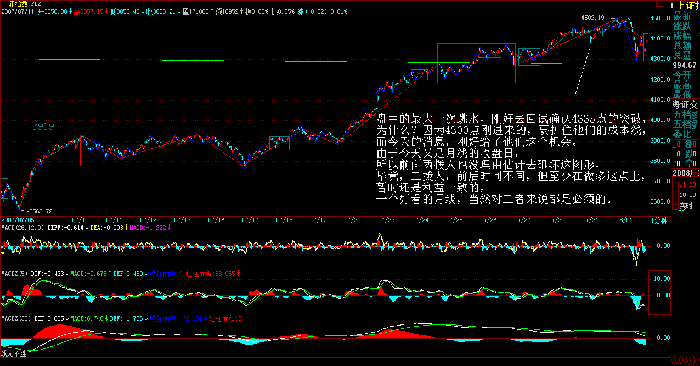
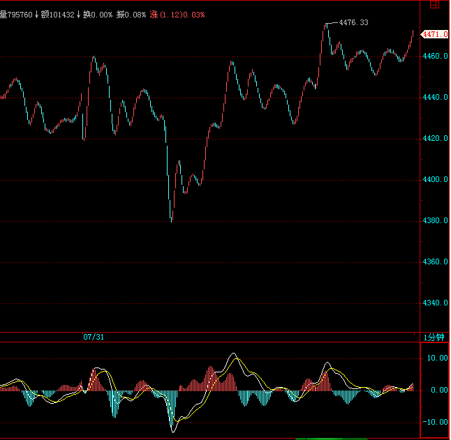
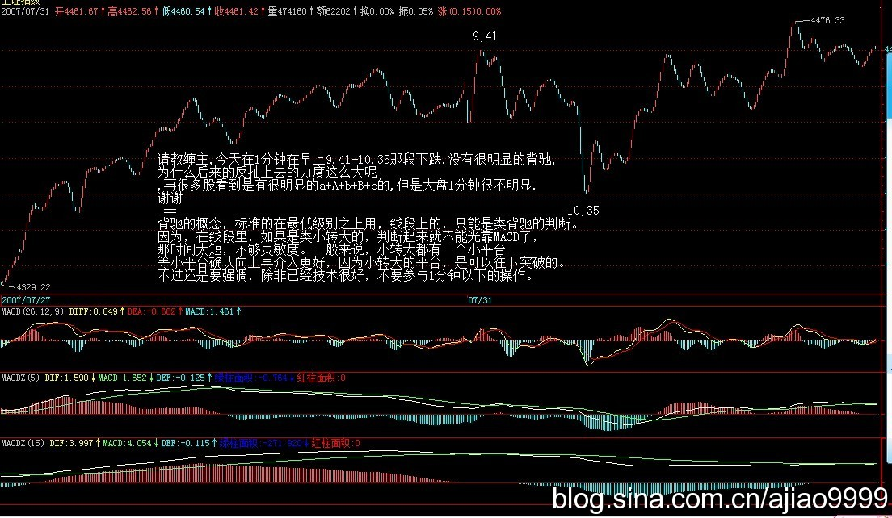

|
 |
教你炒股票66：主力资金的食物链
(2007-07-30 22:42:05)
因为要画图要浪费时间，下一课再说有关线段的问题。今天，说一些宏观点的东西，说说主力资金的食物链。
市场每一时刻的走势，都由当下的合力构成，如果1亿人参加的市场，每一分力都是相等的、都是独立的，那么市场的整个运转和现实的情况，当然有所不同。现实的情况是，有些分力是特别巨大于其他的分力，在这种情况下，对合力的分析，不能脱离对这些特别巨大分力的分析。
如果现实的系统中这种特别巨大的分力只有一个，其他分力与之相比都可以忽略不算，那么市场的所谓合力，就与这分力基本无异了。例如，在那些控盘程度极端高的股票中，就往往呈现这种情况。而这种一个分力远大于其他分力的系统，其稳定性是会产生突变的。关于个股的情况，以后会说到，这里先说说关于大盘合力与分力的关系。
有一种很流行却纯粹出于想象的说法，是关于所谓市场主力资金的。在这种流行的谬误中，似乎市场中的主力只有一拨人，他们控制着市场的走势，画着每天大盘的分时图中每分每秒。而事实上，这种所谓的主力，从来没存在过。市场从来都分裂着不同的利益集团，所谓的主力资金，从来都是分派别的，各派别之间，会有联手，会有默契，但也有暗算、互相拆台等等，黄雀、螳螂、蝉的游戏也一点都不新鲜。
主力资金层面的运作，当然也不是单纯的技术分析可以包括的。用打仗来比喻，技术分析，不过是一些战术性问题，而战略性问题，就不是技术分析可以解决的。例如，如果你是一个散户，你只要把本ID的技术理论搞清楚，那在市场中就可以游刃有余了。但如果光把本ID的技术理论搞清楚，是运作不了主力资金的，当然，技术层面是一个基础，但只是一个方面。但无论什么资金，站在市场走势的角度，不过就是构造出不同级别的买卖点而已。因此，对于散户来说，你无须知道这天上掉下的馅饼是怎么制造的，只需要知道怎么才能吃到这馅饼。
必须明确的，任何的主力资金，无论什么背景、级别，最终都不可能逆整个经济的大势而行。资金不是一拨，山头就那么多，10年前的主力，如果不随着市场去发展，到现在就什么都不是了。所以，任何主力资金，无论什么背景、级别，还有一个特点，就是要折腾。不折腾，就没有江湖地位，唯一不同的，只是折腾什么，只是不同市场、板块的变换。
在单一的股票市场中，不同风格、背景、势力的资金，各自控制着不同的板块，最大的几个，构成食物链的最上层。一般来说，这几拨资金都是老油条，互相也知根底，其根底往往不在市场中，而在市场之外，一般情况下，各方都是保持江湖规矩，不会轻易与某一方开战。但，绝对不是说，最大的家伙间就没有战争，而是这战争无时不在，只是都在等着一方出现破绽，余下的一拥而上，分而吃之。中国资本市场的历史上，出现过好几次这样的事情，都是陈年旧事，不说也罢。
当然，最大的家伙，也不是一成不变的，不同的年代也会改变点包装，换些名头。
从这食物链的最高端开始，逐级下去，到最后的散户个体，分着好几个层次。对于最大的主力来说，对下面几个层次的生态状态，会保持一定的维持。一般来说，一个新的最高级别的势力出现，是没有人愿意看到的。因此，那些在次一级别中特别活跃，特别有上升苗头的，都会被重点绞杀。对于最高级别的主力来说，一个各层次的生态平衡是最有利的。站在这个意义上，如果有些对散户特别恶劣的，要把散户或某层次赶尽杀绝的，那么肯定成为最高级别主力绞杀的对象。这种事情，在资本历史上也太常见了。一般来说，这种绞杀对象，都类似暴发户，最高级别的主力，就如同贵族，贵族当然看不起暴发户，特别当这暴发户影响了整个市场生态的平衡，不对之株连九族，斩草除根，那还怎么当贵族？这种绞杀，当然可以是市场化的，却不一定是市场化的，这就不想多说了。
完美的震荡制造完美的月线收盘
(2007-07-31
16:03:53)
今天，有没有消息都要震荡，反而因为消息的出现，使得震荡中，市场各方的心理都比较平稳。盘中的最大一次跳水，刚好去回试确认4335点的突破，为什么？因为4300点刚进来的，要护住他们的成本线，而今天的消息，刚好给了他们这个机会。由于今天又是月线的收盘日，所以前面两拨人也没理由估计去砸坏这图形，毕竟，三拨人，前后时间不同，但至少在做多这点上，暂时还是利益一致的，一个好看的月线，当然对三者来说都是必须的。
 有了月线，那么8月的走势，无非就是长阴线、十字星、长阳线等几种。纯技术的角度，本月K线的一半位置刚好和1/2线的位置差不多，也就是说，这月K线的确立，使得1/2线的突破有了极大的保障，虽然不能说万无一失，但至少对于多头，特别对于前面两拨进去的人来说，已经有了中线运作的第一道防线。短线，还是看4300点进去这一拨，他们最大的愿望，当然是快速拉离目前位置，所以短线做多意愿最大的就是这一拨人。3600点这拨，当然乐见其成，4000点那拨人，也不会有太大分歧。
但是，基本面上依然有不明朗的地方，国家对目前经济形势的判断，依然有可变的地方，这构成影响今后走势最重要的因数。因此，大盘能否把去年8月后的走势复制一次，基本面上还有着极大的不确定因数。这因数，不是哪一拨人可以控制的，那是一个合力的结果，当然，一切都确定了，这市场也太不好玩了，不确定，才有美丽与奇迹可言。
技术上，其实十分简单。前面几次的单边势，都是基本以5日线为支持，基本上，在单边势里，没有3天是收在5日线之下的，因此，如果不会看太复杂图形的，5日线，或者中线的5周均线，就是最简单的判断指标。如果震荡连5日线都不破，那还怕什么？日线上，可以先以背驰段看待，然后根据后面的走势去确认背驰段是否有效。短线，4500点附近如果太快通过，就会为以后的走势埋下技术隐患，本周走势，如果继续长阳，将使得可能的基本面变化埋下政策隐患。但现在急功近利者太多，而本ID也不想浪费筹码进行太严厉的调控，因为本ID并不介意这次真搞成一个背驰段，现在本ID的策略，就是尽量不作为，让各路举重选手自己表现去。
个股方面，还是一早说的两条主线，成分股和超跌股，那些从年线或半年线上来的超跌股，也慢慢把形态走好，一旦大盘中线上升完全确立，那么都会轮动走出行情，但问题的关键是，这个确立依然不完全，所以超跌股的短线表现依然不充分。
一句话，太急功近利，就会把大盘给害了，目前大盘的关键是要走得扎实点。而八月中上旬，基本面上也将有一个中长线的定调，具体到时候就知道，现在还没有结果，这才是必须关注的地方。
今天可以回答各位问题到5点。

缠中说禅：
2007-07-31 16:14:47 [举报]
[匿名] 新浪网友
2007-07-31 16:10:56
缠JJ，一笔是否也有类似线段那样得三角形态或奔走形态？或者说，一笔之中的非顶、底K线是否允许超出顶底的范围呢？顶或底是否一定为一笔的最高点或最低点呢？ 一笔，是一顶一底，怎么会有三角形？顶和底，当然一定是那一笔的最高最低，如果不是，那里面一定不只一笔。
缠中说禅：
2007-07-31 16:18:45 [举报]
[匿名] 新浪网友2007-07-31 16:15:06
缠主,你好，对背弛和背弛段还不能理解，是看MACD的柱线高度还是总的面积啊？
==
标准情况下，黄白线和柱子面积都要看。
缠中说禅：
2007-07-31 16:22:09 [举报]
[匿名] 新手 2007-07-31 16:16:08
老师，对于技术不好的新手，可不可以做长线投资，不理会一时的震荡或调整？
==
技术不好，可以把操作级别扩大为30分钟以上、甚至是日线的，这样，一个月也就操作一两次，而且心态要好点，不要强迫自己一定买卖在最好的位置，最好的位置的买卖，那是要靠磨练的，不可能一上手就达到，所以一定不能有不切实际的想法。
缠中说禅：
2007-07-31 16:24:37 [举报]
[匿名] 新浪网友 2007-07-31 16:22:37
老师：最近这一段行情是否有很多小转大的情况？线段划分分歧很大，你能否再讲一讲？
==
线段划分，下节课说，等等。
缠中说禅：
2007-07-31 16:25:14 [举报]
[匿名] 与你同行2007-07-31 16:23:21
请问老师,1/2线还是指4159点吗
=八月要再加15点。
缠中说禅：
2007-07-31 16:30:44 [举报]
[匿名] RVAER 2007-07-31 16:26:19
请教缠主：按照缺口必补的理论，上周一大盘跳空高开的缺口大概什么时候回补？是要一口气冲到4800才回来补缺口吗？第二批和第三批进来的人会主动去补缺口吗？谢谢~
==
谁告诉你缺口一定补的？上海在300多点那里还有一个大缺口没补，10几年了。
缠中说禅：
2007-07-31 16:35:15 [举报]
[匿名] 新浪网友 2007-07-31 16:23:34
緾主，消息面怎么看啊？－－－今天看两证券报都大版面力推钢铁股，并说机构正持续加仓中，可是买进就被套！难道消息要反着看？
==
去年年尾，本ID在这里明确说了今年的两大主题：钢铁、医药。这两大板块的布局，去年就开始了。主力资金用了这么长时间来运作，你考虑的是短线，根本不是一种层面的东西，当然没法看了。
缠中说禅：
2007-07-31 16:36:32 [举报]
[匿名] 新浪网友 2007-07-31 16:31:56
博主好！请教：按中枢振荡观点解读走势时，中枢振荡的每一次级段是否按同级分解规则划分呢？能否按非同级分解规则划分呢？
==概念不清，线段上没有中枢，哪里来级别和同级别？线段的划分，就按线段自己的原则，具体下节课回说到。
缠中说禅：
2007-07-31 16:38:37 [举报]
[匿名] 新浪网友2007-07-31 16:36:06
老大 后面走势在顶分型第一个k线的区间内，可以算一笔吗？
==
不可以，除非在后面根据非包含处理后能找到标准的底分型。
缠中说禅：
2007-07-31 16:41:21 [举报]
[匿名] 楚狂人 2007-07-31 16:37:18
感觉市场做多气氛好的时候，1f甚至线段级别的上涨都延伸很久。。
碰到这些小级别的延伸，判断第一卖点感觉好困难。。还是等第二卖点。。不知这样妥否？请缠君指正
==
除非你觉得自己交易通道特别好，判断又能特别精确，否则不要太多参与线段的操作。至少要参与1分钟以上的操作。
缠中说禅：
2007-07-31 16:43:17 [举报]
[匿名] 学习 2007-07-31 16:40:59
请问，9个一分钟的走势类型重叠构成一个5分钟的中枢，那么这个5分钟的中枢点位和从一分钟递归上来的一样吗？
==
不一定。按3+3+3这样组合后确定5分钟的。
缠中说禅：
2007-07-31 16:47:59 [举报]
[匿名] 砂 2007-07-31 16:38:15
请教缠主,今天在1分钟在早上9.41-10.35那段下跌,没有很明显的背驰,为什么后来的反抽上去的力度这么大呢,再很多股看到是有很明显的a+A+b+B+c的,但是大盘1分钟很不明显.谢谢
==
背驰的概念，标准的在最低级别之上用，线段上的，只能是类背驰的判断。因为，在线段里，如果是类小转大的，判断起来就不能光靠MACD了，那时间太短，不够灵敏度。一般来说，小转大都有一个小平台，等小平台确认向上再介入更好，因为小转大的平台，是可以往下突破的。不过还是要强调，除非已经技术很好，不要参与1分钟以下的操作。

缠中说禅：
2007-07-31
16:48:50 [举报]
[匿名] 新浪网友 2007-07-31 16:44:03 有包含的一定要非包含化处理。严格按定义来。
缠中说禅：
2007-07-31
16:50:47 [举报]
[匿名] 神抛弃的大道2007-07-31 16:46:49
女王好，关于您的理论，我有个小小的问题，就是如果9跟线段构成的1f中枢同时扩张成为5f中枢，那么5f中枢的区间如何确定，您能说明一下么，要是能图解一下最好不过了？这个问题困扰我一段时间了。谢谢女王，盼复。
==
按结合律。3+3+3结合。
缠中说禅：
石头叁 2007-07-31 16:49:58 ==
一般情况下是这样，但有些特殊情况，下节课都会说到。
缠中说禅：
2007-07-31
16:55:59 [举报]
[匿名] 大盘 2007-07-31 16:50:53
|
|
|
|